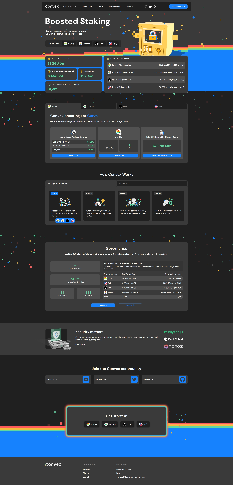
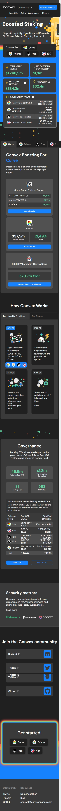

Convex Finance
For DeFi investors looking to optimize their yields, provides a platform that offers increased earnings potential through unique strategies. By leveraging your position in the crypto landscape, you can maximize returns with enhanced staking options.
What is Convex Finance?
Convex Finance is a decentralized finance platform that allows users to earn boosted rewards by interacting with Curve Finance. It stands out by simplifying the process of earning Curve boosted rewards without the complexity typically associated with similar services.
How Convex Finance Works
Platform Simplicity: Convex allows users to deposit Curve LP tokens and receive enhanced yield with greater ease.
Boosted CRV Rewards: By using Convex, users receive a boost in CRV token rewards without personally holding veCRV.
Loyalty Token $CVX: Users also earn CVX as a loyalty token adding another layer of yield.
Benefits of Using Convex Finance
There are several compelling reasons to choose Convex for your cryptocurrency staking needs:
Maximized Earnings: Enjoy higher returns compared to other staking platforms due to the innovative yield enhancement models.
Community Voting: $CVX token holders have a say in the platform’s governance, influencing key decisions and future developments.
User-Focused Experience: The interface is designed for simplicity, ensuring that both novices and seasoned traders can easily navigate and utilize the platform to its full potential.
Getting Started with Convex Finance
To get started, visit the and connect your crypto wallet. From there, you can start staking Curve LP tokens and benefit from the Convex advantage along with the community governance options available through holding CVX tokens.